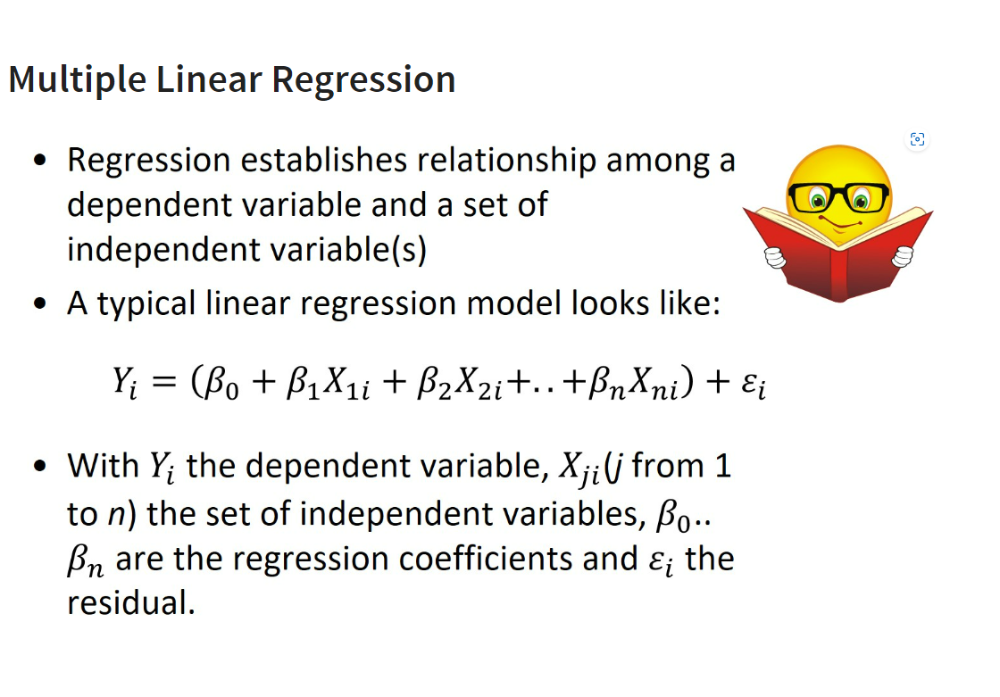

pacman::p_load(olsrr, ggpubr, sf, spdep, GWmodel, tmap, tidyverse, gtsummary)
#dont load this corrplot in pacman install seperately to avoid unneeded confict Take-home Exercise 3: Predicting HDB Public Housing Resale Pricies using Geographically Weighted Methods
1 Setting the Scene
Housing is an essential component of household wealth worldwide. Buying a housing has always been a major investment for most people. The price of housing is affected by many factors. Some of them are global in nature such as the general economy of a country or inflation rate. Others can be more specific to the properties themselves. These factors can be further divided to structural and locational factors. Structural factors are variables related to the property themselves such as the size, fitting, and tenure of the property. Locational factors are variables related to the neighbourhood of the properties such as proximity to childcare centre, public transport service and shopping centre.
Conventional, housing resale prices predictive models were built by using Ordinary Least Square (OLS) method. However, this method failed to take into consideration that spatial autocorrelation and spatial heterogeneity exist in geographic data sets such as housing transactions. With the existence of spatial autocorrelation, the OLS estimation of predictive housing resale pricing models could lead to biased, inconsistent, or inefficient results (Anselin 1998). In view of this limitation, Geographical Weighted Models were introduced for calibrating predictive model for housing resale prices.
more than 2 - norminal
real world phenominal - no negative variable - dont use linear regression use poson
linear regression
cannot use for how many pant want to sell
-5 covid patience
feed straight line - give best fit
minimise residue , best fit minimise error 
beta - parameter estimate / slope of independent var , explain how well I explain , slope can be +/- , not show strength but slope will , +/- only show direction
multi-linear regression
-one response variable - number / continuous form
-property price can have decimal
-dependent var -continuous
goodness of fit : bttr if use avg
f-test stat compare
reject or fear to reject
95% confidence interval
p < 0.05 reject
this model is btr avg
multiple indeV/ explainatory var - use adjusted R
when add in new var r2 increase
-
for map
{##| fig-width: 30}
require(dplyr)
resale = st_read(
dsn = "data/aspatial/resale-flat-prices-based-on-registration-date-from-jan-2017-onwards.csv")Reading layer `resale-flat-prices-based-on-registration-date-from-jan-2017-onwards' from data source `C:\tiffanik\IS415-GAA\Take-home_Ex\Take-home_Ex03\data\aspatial\resale-flat-prices-based-on-registration-date-from-jan-2017-onwards.csv'
using driver `CSV'Warning: no simple feature geometries present: returning a data.frame or tbl_df# Define vector of values to filter
filter_flat_type <- c("3 ROOM", "4 ROOM", "5 ROOM")
resale_subset <- filter(resale,flat_type %in% filter_flat_type)%>%
filter(month >= "2021-01" & month <= "2022-12")rs_transform <- resale_subset %>%
mutate(resale_subset, address = paste(block,street_name)) %>%
mutate(resale_subset, remaining_lease_yr = as.integer(str_sub(remaining_lease, 0, 2))) %>%
mutate(resale_subset, remaining_lease_mth = as.integer(str_sub(remaining_lease, 9, 11)))rs_transform$remaining_lease_mth[is.na(rs_transform$remaining_lease_mth)] <- 0
rs_transform$remaining_lease_yr <- rs_transform$remaining_lease_yr * 12
rs_transform <- rs_transform %>%
mutate(rs_transform, remaining_lease_mths = rowSums(rs_transform[, c("remaining_lease_yr", "remaining_lease_mth")])) %>%
select(month, town, address, block, street_name, flat_type, storey_range, floor_area_sqm, flat_model,
lease_commence_date, remaining_lease_mths, resale_price)add_list <- sort(unique(rs_transform$address))get_coords <- function(add_list){
# Create a data frame to store all retrieved coordinates
postal_coords <- data.frame()
for (i in add_list){
#print(i)
r <- GET('https://developers.onemap.sg/commonapi/search?',
query=list(searchVal=i,
returnGeom='Y',
getAddrDetails='Y'))
data <- fromJSON(rawToChar(r$content))
found <- data$found
res <- data$results
# Create a new data frame for each address
new_row <- data.frame()
# If single result, append
if (found == 1){
postal <- res$POSTAL
lat <- res$LATITUDE
lng <- res$LONGITUDE
new_row <- data.frame(address= i, postal = postal, latitude = lat, longitude = lng)
}
# If multiple results, drop NIL and append top 1
else if (found > 1){
# Remove those with NIL as postal
res_sub <- res[res$POSTAL != "NIL", ]
# Set as NA first if no Postal
if (nrow(res_sub) == 0) {
new_row <- data.frame(address= i, postal = NA, latitude = NA, longitude = NA)
}
else{
top1 <- head(res_sub, n = 1)
postal <- top1$POSTAL
lat <- top1$LATITUDE
lng <- top1$LONGITUDE
new_row <- data.frame(address= i, postal = postal, latitude = lat, longitude = lng)
}
}
else {
new_row <- data.frame(address= i, postal = NA, latitude = NA, longitude = NA)
}
# Add the row
postal_coords <- rbind(postal_coords, new_row)
}
return(postal_coords)
}#coords <- get_coords(add_list)#coords[(is.na(coords$postal) | is.na(coords$latitude) | is.na(coords$longitude) | coords$postal=="NIL"), ]#rs_coords <- left_join(rs_transform, coords, by = c('address' = 'address'))#rs_coords$address <- sub("ST. GEORGE'S", "SAINT GEORGE'S", rs_coords$address)
#rs_invalid <- rs_coords[grepl("SAINT GEORGE'S", rs_coords$address), ]#add_list <- sort(unique(rs_invalid$address))#rs_invalid_coords <- get_coords(add_list)#rs_invalid_coords[(is.na(rs_invalid_coords$postal) | is.na(rs_invalid_coords$latitude) | is.na(rs_invalid_coords$longitude)), ]#rs_coords_final <- rs_coords %>%
# left_join(rs_invalid_coords, by = c("address")) %>%
# mutate(latitude = ifelse(is.na(postal.x), postal.y, postal.x)) %>%
# #mutate(latitude = ifelse(is.na(latitude.x), latitude.y, latitude.x)) %>%
# mutate(longitude = ifelse(is.na(longitude.x), longitude.y, longitude.x)) %>%
# select(-c(postal.x, latitude.x, longitude.x, postal.y, latitude.y, longitude.y))#rs_coords_rds <- write_rds(rs_coords_final, "data/aspatial/rds/rs_coords.rds")#rs_coords_sf <- st_as_sf(rs_coords,
# coords = c("longitude",
# 3 "latitude"),
# crs=4326) %>%
# st_transform(crs = 3414)#length(which(st_is_valid(rs_coords_sf) == FALSE))#tmap_mode("view")
#tm_shape(rs_coords_sf)+
# tm_dots(col="blue", size = 0.02)
#tmap_mode("plot")